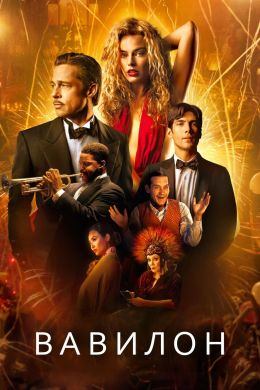
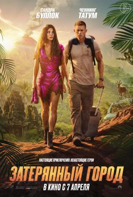
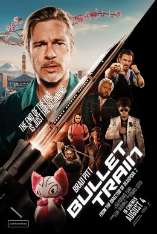

Вавилон(фильм, 2022)
О фильме
Babylon
2022, драма, исторический, комедия, США
время
3 часа 9 минут
режиссер
Дэмьен Шазелл
сценарий
Дэмьен Шазелл
бюджет
-
премьера
23.12.2022 (мир)
31.01.2023 (онлайн)
производство
Paramount Pictures …
другие названия
Babilônia
Вавилон
-Новый фильм оскароносного режиссёра «Одержимости» и «Ла-Ла Ленда» Дэмьена Шазелла. В этот раз он вновь обращается к золотой эпохе Голливуда — теперь не только стилистически, но и сюжетно. В центре истории два актёра (их играют Марго Робби и Брэд Питт), которые оказались на стыке эпох немого и «говорящего» кино и вынуждены выживать в новых индустриальных условиях
Затерянный город (фильм, 2022)
О фильме
Babylon
2022, драма, исторический, комедия, США
время
1 час 52 минуты
режиссеры
Аарон Ни
Адам Ни
сценарий
Орен Узил
Дэйна Фокс
Адам Ни
Аарон Ни
Сет Гордон
бюджет
-
премьера
12.03.2022 (мир)
производство
Paramount Pictures …
другие названия
The Lost City of D
Din …
ссылки
-
По сюжету, известная писательница отправляется в турне для презентации своего нового романа вместе с парнем, украшающим обложку её книги. По стечению обстоятельств, после попытки похищения одиозным злодеем пара оказывается в джунглях.
Быстрее пули (фильм, 2022))
О фильме
Bullet Train
2022, боевик, комедия, триллер, США
время
2 часа 0 минут
режиссер
Дэвид Литч
сценарий
Котаро Исака
Зак Олькевич
бюджет
-
премьера
14.07.2022 (мир)
05.08.2022 (РФ)
кинопрокат
SPPR
производство
87North …
другие названия
Скоростной поезд
Tren …
В основе сюжета ― одноимённый японский комикс Котаро Исаки. Главными героями выступают пятеро наёмных убийц, которые оказываются на борту скоростного поезда из Токио в Мориоко. Каждый из них должен выполнить своё задание, однако всем необходимо выжить и узнать, что их ждёт на конечной станции.